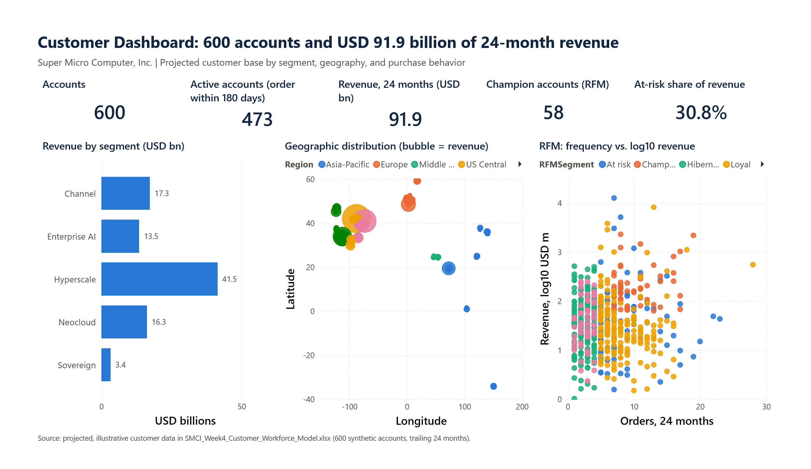
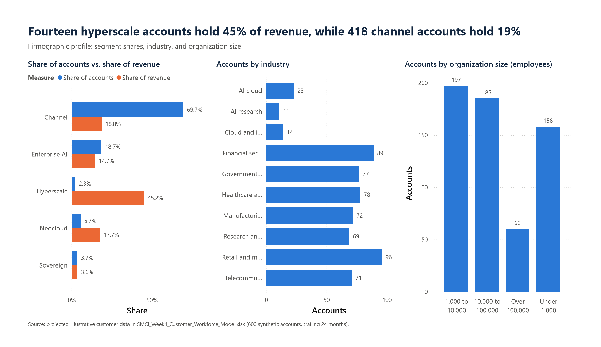
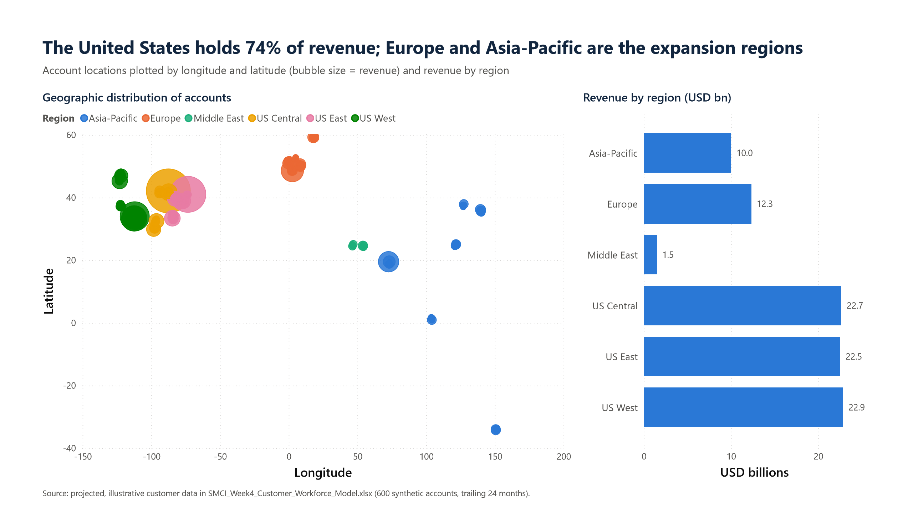
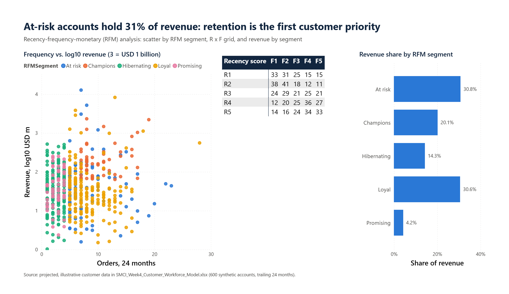
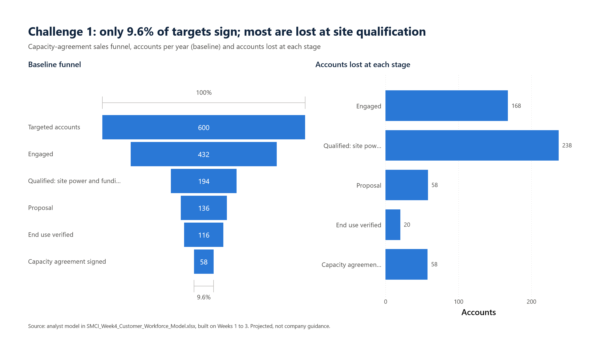
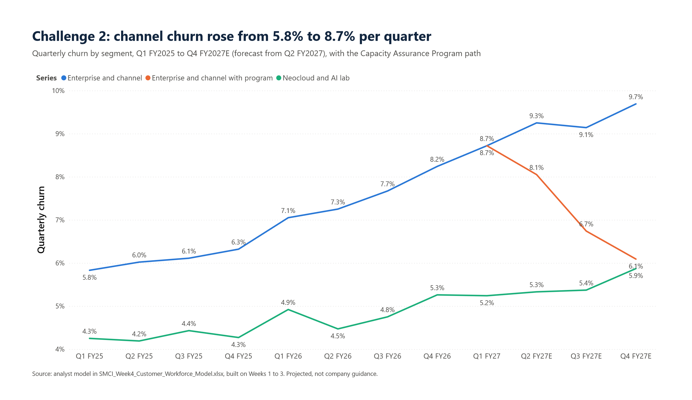
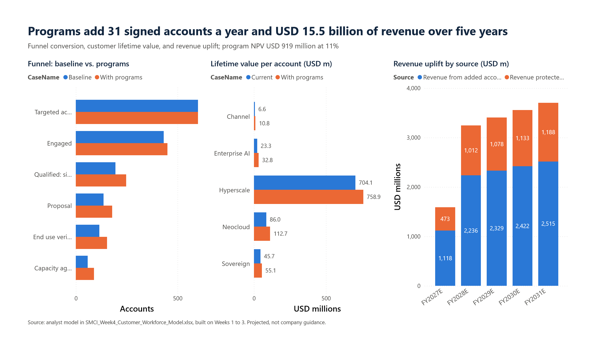

Customer Relations
Purpose
The Reservation-Backed AI Factory depends on two human factors: a customer base willing to commit to capacity in advance, and a workforce able to deliver the committed capacity. The Customer Relations section profiles the customer base, identifies the two primary obstacles to expansion, and sets out a model to overcome both. Customer data in the section is projected for 600 accounts over a trailing 24-month window, as the assignment permits, and is calibrated to the segment structure reported by Supermicro (The Motley Fool, 2026b).
Customer Profile and Segmentation
Live Customer Segmentation Dashboard
The Power BI publish or embed URL has not been supplied. The complete exported dashboard remains visible below as Figure 53.
VIEW POWER BI FIGURE 53 ↓Live report integration is configured to use an authorized Power BI embed URL. Projected customer data are illustrative rather than observed company account records.

Model interpretation. The projected 600-account portfolio is segmented by commercial motion, geographic revenue, and recency-frequency-monetary behavior. The exported dashboard remains an accessible fallback while the live Power BI URL is pending.
Who the Customers Are
Supermicro serves five customer segments, each with a distinct buying pattern.
| Segment | Accounts | Share of accounts | Share of revenue | Buying pattern |
|---|---|---|---|---|
| Hyperscale and large data center | 14 | 2.3% | 45.2% | Multi-hundred-megawatt programs, executive-led |
| Neocloud and AI lab | 34 | 5.7% | 17.7% | Fast-growing, financing-dependent, speed-sensitive |
| Sovereign and government AI | 22 | 3.7% | 3.6% | In-region, compliance-sensitive, slower cycles |
| Enterprise AI factory | 112 | 18.7% | 14.7% | Standard 5 MW blueprints, IT and facility teams |
| Enterprise and channel | 418 | 69.7% | 18.8% | Purchase orders through resellers and integrators |

Analysis. Revenue is far more concentrated than the account base. Fourteen hyperscale accounts produce 45% of revenue, while 418 channel accounts produce 19%. Industry coverage is broad: retail and media (96 accounts), financial services (89), healthcare and life sciences (78), and government and public sector (77) are the largest groups. Mid-sized organizations of 1,000 to 100,000 employees make up 382 of the 600 accounts.

Analysis. The United States holds 74% of revenue, split almost evenly across the western, central, and eastern regions at about USD 22 billion to USD 23 billion each. Europe (USD 12.3 billion) and Asia-Pacific (USD 10.0 billion) are the expansion regions, which aligns with the Netherlands and Malaysia hubs and the foreign pricing analysis in Week 2. The Middle East remains small but strategic for sovereign programs.

Analysis. RFM analysis scores each account by recency of the last order, frequency of orders, and monetary value of spending. The scores divide the base into actionable groups (Fader et al., 2005):
- Champions (58 accounts, 20% of revenue): recent, frequent, and high-value buyers.
- Loyal (31% of revenue): frequent buyers with steady orders.
- At risk (31% of revenue): accounts that ordered often in the past but have not ordered in roughly 290 days on average. Several large accounts sit between deployment waves, so the next wave may go to a competitor.
- Hibernating (14% of revenue): low-frequency accounts with no recent order.
- Promising (4% of revenue): new accounts with recent first orders.
How the Insights Inform Solicitation and Retention
- Retention before acquisition. At-risk accounts hold as much revenue as loyal accounts. Each at-risk account receives a capacity review within 30 days, with an offer to reserve the next deployment wave under a Reserved or Strategic Capacity agreement.
- Account-based selling for the vital few. Hyperscale and neocloud accounts (8% of accounts, 63% of revenue) receive dedicated executive sponsors and quarterly capacity planning sessions tied to the capacity ledger.
- Programmatic selling for the many. Enterprise and channel accounts receive standard 5 MW blueprints, partner-delivered site assessments, and digital ordering, so cost to serve stays low.
- Regional solicitation. European and Asia-Pacific campaigns lead with in-region assembly and verified end use, which address the sovereignty concerns of buyers in both regions.
- Champion advocacy. Champions are invited into a reference program, which strengthens the reference-customer loop (R2) identified in the Week 2 causal loop diagram.
How Supermicro Interacts with Customers
Customer interaction follows the reservation lifecycle. Account teams run quarterly capacity reviews against the capacity ledger, site readiness engineers join before signature, and a customer portal shows build-slot status, delivery milestones, and live telemetry after energization. Lifecycle service managers hold monthly service reviews. Relationship health is tracked through RFM movement, order recency, and service ticket trends, so that an account moving toward "At risk" triggers outreach before the account lapses.
Securing the Market
The market position is secured through switching costs and capabilities that are difficult to copy:
- Contracted capacity. Deposits and reserved build slots lock in demand ahead of competitors.
- Lifecycle services. Ongoing service ties customers to Supermicro after delivery.
- Verified end use. Independent verification earns regulator and buyer trust, which matters most for sovereign customers.
- Regional hubs. In-region assembly shortens delivery times.
- Speed. Faster energization, demonstrated in the Week 2 simulation, delivers value that customers can measure.
Challenges to Expanding the Customer Base
Challenge 1: High Drop-Off in the Capacity-Agreement Funnel

Analysis. Of 600 targeted accounts, only 58 sign a capacity agreement in a year, an end-to-end conversion of 9.6%. The largest loss, 238 accounts, occurs at qualification, because the customer site lacks power, cooling, or funding. A second loss of 58 accounts occurs at signature, where buyers resist the 20% deposit and the commitment term. Both losses occur after Supermicro has already invested sales and engineering effort.
Challenge 2: Rising Churn in the Enterprise and Channel Base

Analysis. Quarterly churn in the enterprise and channel base rose from 5.8% to 8.7% between Q1 FY2025 and Q1 FY2027. That rate implies annual retention of only 69.5%. The trend is consistent with reported results: enterprise and channel revenue fell 12% quarter over quarter in Q1 FY2027 while large data center deployments absorbed capacity (The Motley Fool, 2026b). Smaller buyers facing long lead times move to competitors, which deepens dependence on a few hyperscale accounts.
Model to Overcome the Challenges and Increase Revenue
The model combines three programs, each aimed at a specific loss point.
- Site Readiness Accelerator (Challenge 1, qualification). Supermicro and engineering partners assess and remediate customer power and cooling before the proposal stage, with financing partners for neocloud buyers. Qualification conversion rises from 45% to 55%.
- Capacity Assurance Program (Challenge 2, and Challenge 1 at signature). The loyalty program reserves 5% of hub capacity for enterprise and channel customers. Customers earn tiered service credits based on committed volume and guaranteed lead times for repeat orders, and the deposit is credited against lifecycle services. Signature conversion rises from 50% to 58%, and channel quarterly churn falls toward 6.1% by Q4 FY2027E, which lifts annual retention from 69.5% to 76.1%.
- Enterprise blueprint campaign. Account-based marketing promotes standard 5 MW AI factory blueprints through channel partners, with packaged financing.

Model interpretation. The combined funnel and retention model raises end-to-end capacity agreement conversion from 9.6% to 14.8% and protects channel revenue. The model reports USD 15.5 billion in five-year revenue uplift under stated assumptions.
Model Logic
- Funnel. End-to-end conversion rises from 9.6% to 14.8%, adding 31 signed accounts per year. At a projected USD 120 million to USD 135 million of first-year reserved revenue per added account and a 60% realization factor, the added accounts contribute about USD 10.6 billion over five years.
- Retention. Customer lifetime value follows CLV = m × r / (1 + d − r), where m is annual margin per account, r is annual retention, and d is the 11% discount rate (Gupta et al., 2004). The Capacity Assurance Program raises channel-account CLV from USD 6.6 million to USD 10.8 million and enterprise AI factory CLV from USD 23.3 million to USD 32.8 million, adding USD 4.7 billion of customer-base value. Lower churn protects about USD 4.9 billion of revenue over five years. Retention is the stronger lever per dollar, consistent with evidence that small reductions in defection produce large gains in profit (Reichheld & Sasser, 1990).
| USD millions | FY2027E | FY2028E | FY2029E | FY2030E | FY2031E | Total |
|---|---|---|---|---|---|---|
| Revenue from added accounts | 1,118 | 2,236 | 2,329 | 2,422 | 2,515 | 10,620 |
| Revenue protected by lower churn | 473 | 1,012 | 1,078 | 1,133 | 1,188 | 4,884 |
| Total revenue uplift | 1,591 | 3,248 | 3,407 | 3,555 | 3,703 | 15,504 |
| Gross profit uplift (12%) | 191 | 390 | 409 | 427 | 444 | 1,860 |
| Program costs | 87 | 116 | 119 | 122 | 124 | 567 |
| Net contribution | 104 | 274 | 290 | 305 | 320 | 1,293 |
Conclusion. The programs add USD 15.5 billion of revenue and USD 1.3 billion of net contribution over five years, with an NPV of USD 919 million at 11%. Because the uplift accrues on top of the Week 1 plan, the programs raise the probability of reaching the reserved-revenue targets evaluated in Week 2.